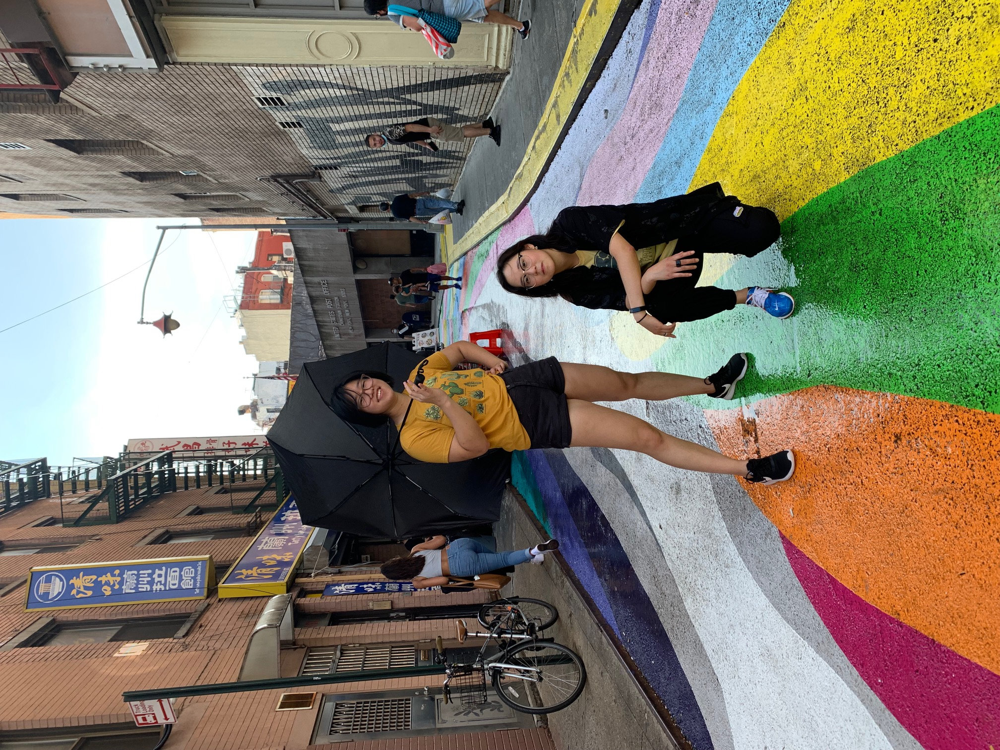
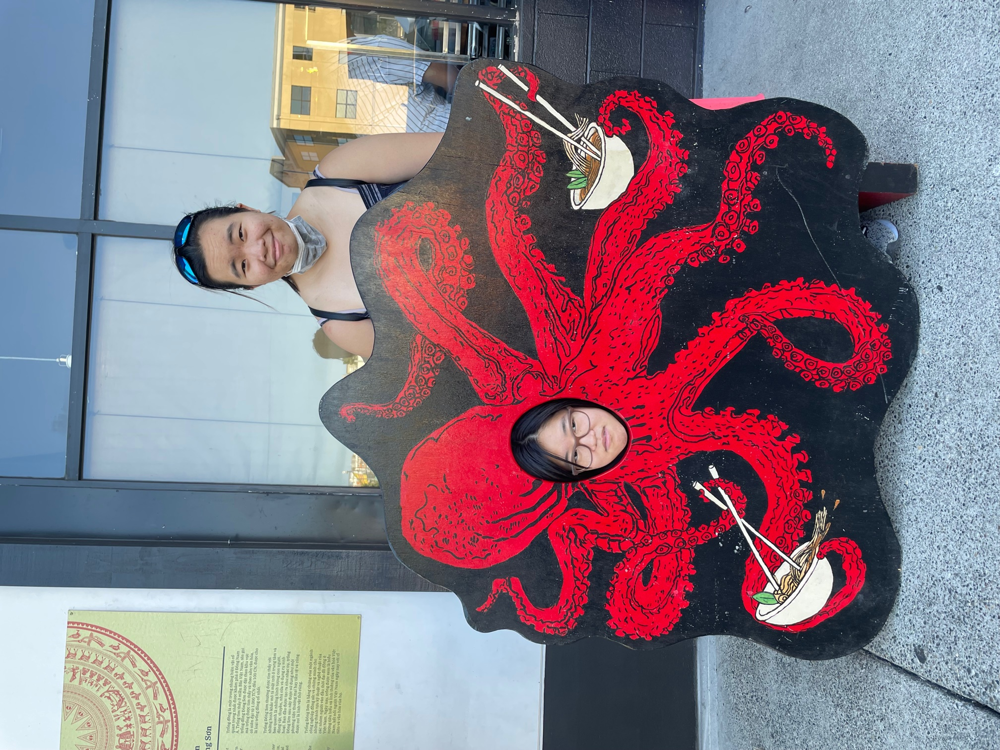
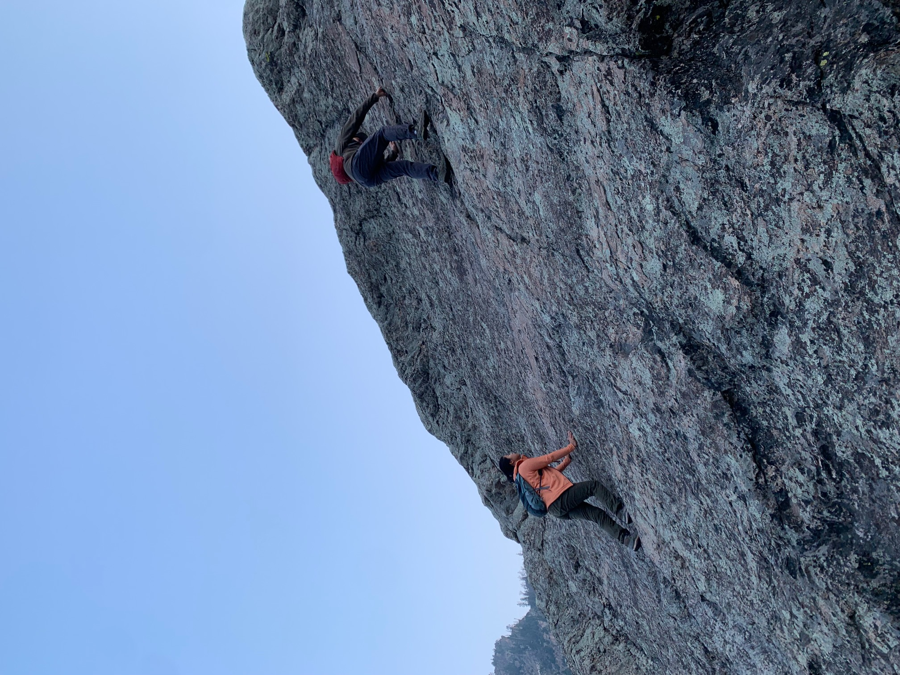

This summer I had a remote internship as a Supply Chain Intern at General Motors, and while I was disappointed that I wouldn't get in-person work experience, I used it as an opportunity to do something I had always wanted to do: roadtrip across America! My first stop was New Jersey, where I stayed with my roommate, Matilda, and her family. While I was there, I went into New York City to see one of my old middle school friends, Alison. We went to Chinatown, and took the first picture at the bottom on a rainbow road surrounded by some graffiti. After returning back home to Ohio for a bit, a went off to the West Coast, to visit Lisa at her internship in Seattle! We hit up tons of amazing food locales, including a seafood restaurant where I took the middle photo while waiting in the parking lot. My last stop was in Denver, where my older sister and her boyfriend had just recently moved to. It was their first ever house together, and it was an upgrade from their previously tiny apartment. My sister loves the outdoors, and specializes in lead climbing, hiking, and bouldering. I can't do any of that so I just took pictures, like the header image, and the photo furthest to the right. It was an eventful summer, and I was able to do all that while completing my first internship!
  